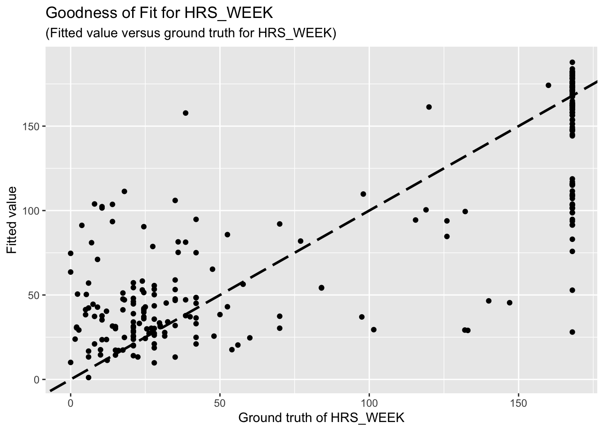

Linear Regression Analysis
Junhui He, edited by Paloma C.
2025-03-09
Last updated: 2025-03-09
Checks: 6 1
Knit directory: QUAIL-Mex/
This reproducible R Markdown analysis was created with workflowr (version 1.7.1). The Checks tab describes the reproducibility checks that were applied when the results were created. The Past versions tab lists the development history.
The R Markdown file has unstaged changes. To know which version of
the R Markdown file created these results, you’ll want to first commit
it to the Git repo. If you’re still working on the analysis, you can
ignore this warning. When you’re finished, you can run
wflow_publish to commit the R Markdown file and build the
HTML.
Great job! The global environment was empty. Objects defined in the global environment can affect the analysis in your R Markdown file in unknown ways. For reproduciblity it’s best to always run the code in an empty environment.
The command set.seed(20241009) was run prior to running
the code in the R Markdown file. Setting a seed ensures that any results
that rely on randomness, e.g. subsampling or permutations, are
reproducible.
Great job! Recording the operating system, R version, and package versions is critical for reproducibility.
Nice! There were no cached chunks for this analysis, so you can be confident that you successfully produced the results during this run.
Great job! Using relative paths to the files within your workflowr project makes it easier to run your code on other machines.
Great! You are using Git for version control. Tracking code development and connecting the code version to the results is critical for reproducibility.
The results in this page were generated with repository version 8e33bbc. See the Past versions tab to see a history of the changes made to the R Markdown and HTML files.
Note that you need to be careful to ensure that all relevant files for
the analysis have been committed to Git prior to generating the results
(you can use wflow_publish or
wflow_git_commit). workflowr only checks the R Markdown
file, but you know if there are other scripts or data files that it
depends on. Below is the status of the Git repository when the results
were generated:
Ignored files:
Ignored: .DS_Store
Ignored: .RData
Ignored: .Rhistory
Ignored: .Rproj.user/
Ignored: analysis/.DS_Store
Ignored: analysis/.RData
Ignored: analysis/.Rhistory
Ignored: analysis/Hrs_by_HWISE score.png
Ignored: code/.DS_Store
Ignored: data/.DS_Store
Unstaged changes:
Modified: analysis/HBA2025_Analyses.Rmd
Modified: analysis/HBA2025_cleaning.Rmd
Modified: analysis/MX28_plots.Rmd
Modified: analysis/Regression-Analysis_PC.Rmd
Modified: analysis/tests.Rmd
Modified: data/Cleaned_Dataset_Screening_HWISE_PSS_V3.csv
Note that any generated files, e.g. HTML, png, CSS, etc., are not included in this status report because it is ok for generated content to have uncommitted changes.
These are the previous versions of the repository in which changes were
made to the R Markdown
(analysis/Regression-Analysis_PC.Rmd) and HTML
(docs/Regression-Analysis_PC.html) files. If you’ve
configured a remote Git repository (see ?wflow_git_remote),
click on the hyperlinks in the table below to view the files as they
were in that past version.
| File | Version | Author | Date | Message |
|---|---|---|---|---|
| Rmd | 7866aba | Paloma | 2025-03-07 | newplots |
| html | 7866aba | Paloma | 2025-03-07 | newplots |
| Rmd | 4ffe9ef | Junhui He | 2025-03-06 | add elastic-net |
| html | 4ffe9ef | Junhui He | 2025-03-06 | add elastic-net |
| Rmd | 0a00a41 | Paloma | 2025-03-06 | reg_analysis 2 |
| html | 0a00a41 | Paloma | 2025-03-06 | reg_analysis 2 |
| Rmd | 4a934f3 | Paloma | 2025-03-04 | incl research qs |
| html | 4a934f3 | Paloma | 2025-03-04 | incl research qs |
| Rmd | 6738718 | Paloma | 2025-03-04 | new regressions |
| html | 6738718 | Paloma | 2025-03-04 | new regressions |
| Rmd | f0811f0 | Paloma | 2025-03-04 | reduced NAs |
1 Introduction
Our research questions are:
What variables measured using Paloma’s questionnaires are good predictors of HWISE total scores?
What HWISE questions are good predictors of alternative water insecurity measurements, such as hours of water supply (HRS_WEEK), or type of supply (continuous or intermittent, W_WC_WI)?
Does water insecurity has any association with Perceived stress scores (PSS)? If so, what variables/aspects of water insecurity are driving this stress levels?
Here I repeat the analyses conducted by Junhui He, but adding and removing a few variables that could make more sense as predictors of the Total HWISE score or Total PSS score. These are the two linear regression models we run earlier:
HW_TOTAL ~ D_AGE + D_HH_SIZE + D_CHLD + HLTH_SMK + HLTH_CPAIN_CAT + HLTH_CDIS_CAT + SES_SC_Total
PSS_TOTAL ~ D_AGE + D_HH_SIZE + D_CHLD + HLTH_SMK + HLTH_CPAIN_CAT + HLTH_CDIS_CAT + SES_SC_Total
The two new linear regression models are different from the previous ones:
Removed HLTH_SMK, HLTH_CPAIN_CAT, and HLTH_CDIS_CAT
Added D_LOC_TIME, SEASON, W_WS_LOC, W_WC_WI, HRS_WEEK
Added HWISE_TOTAL as potential predictor of PSS
1.b Variable descriptions for quick reference
Ordered alphabetically
| Variable | Description | Class | Values |
|---|---|---|---|
| D_AGE | Participants’ age | Numeric | 18:49 |
| D_CHLD | Number of children participant has birthed | Numeric | 0:8 |
| D_HH_SIZE | Household size | Numeric | 2:40 |
| D_LOC_TIME | For how long have you lived in this neighborhood? | Numeric | 1:46 (years) |
| HLTH_CDIS_CAT | Presence of chronic disease | Categorical (Binary) | 1 = yes, 0 = no |
| HLTH_CPAIN_CAT | Presence of chronic pain | Categorical (Binary) | 1 = yes, 0 = no |
| HLTH_SMK | Tobacco smoker | Categorical (Binary) | 1 = yes, 0 = no |
| HRS_WEEK | Hours of water supply in the household per week | Numeric | 0:168 |
| HW_TOTAL | Sum of all 12-items in HWISE questionnaire | Numeric | 0:27 |
| MX28_WQ_COMP | Perception of water service as worse, same, or better than rest of Mexico City | Categorical (Ordinal) | 0 = worse, 1 = same, 2 = better |
| PSS_TOTAL | Total Perceived Stress Score | Numeric | -19:19 |
| SEASON | Fall or Spring (when data collection happened) | Categorical (Binary) | Fall = 1, Spring = 0 |
| SES_SC_Total | Socioeconomic status score | Numeric | 25:263 |
| W_WS_LOC | Classification of neighborhoods as water secure or insecure | Categorical (Binary) | 1 = water insecure, 0 = water secure |
| W_WC_WI | Classification of water supply as continuous or intermittent | Categorical (Binary) | 1 = intermittent, 0 = continuous |
2 Data preparation
We remove rows with missing data.
HW_TOTAL is calculated by adding up all the HWISE scores; PSS_TOTAL is calculated by adding up PSS 1,2,3, 8, 11, 12, 14, and substracting 4,5,6,7,9,10, and 13.
[1] "ID" "MX8_TRUST" "MX28_WQ_COMP" "MX26_EM_HHW_TYPE"
[5] "D_YRBR" "D_LOC_TIME" "D_AGE" "D_HH_SIZE"
[9] "D_CHLD" "HLTH_SMK" "SES_SC_Total" "SEASON"
[13] "W_WS_LOC" "HW_WORRY" "HW_INTERR" "HW_CLOTHES"
[17] "HW_PLANS" "HW_FOOD" "HW_HANDS" "HW_BODY"
[21] "HW_DRINK" "HW_ANGRY" "HW_SLEEP" "HW_NONE"
[25] "HW_SHAME" "PSS1" "PSS2" "PSS3"
[29] "PSS4" "PSS5" "PSS6" "PSS7"
[33] "PSS8" "PSS9" "PSS10" "PSS11"
[37] "PSS12" "PSS13" "PSS14" "HLTH_CPAIN_CAT"
[41] "HLTH_CDIS_CAT" "HW_TOTAL" "W_WC_WI" "HRS_WEEK"
[45] "PSS_TOTAL" Initial number of unique participants: 401 Initial number of variables: 45 Warning: NAs introduced by coercion
Warning: NAs introduced by coercion| Variable | Missing_Values | |
|---|---|---|
| HLTH_SMK | HLTH_SMK | 78 |
| SES_SC_Total | SES_SC_Total | 52 |
| HRS_WEEK | HRS_WEEK | 39 |
| D_LOC_TIME | D_LOC_TIME | 36 |
| D_CHLD | D_CHLD | 24 |
| D_HH_SIZE | D_HH_SIZE | 23 |
| W_WC_WI | W_WC_WI | 22 |
| D_AGE | D_AGE | 18 |
| D_YRBR | D_YRBR | 17 |
| MX8_TRUST | MX8_TRUST | 12 |
| MX26_EM_HHW_TYPE | MX26_EM_HHW_TYPE | 12 |
| HW_TOTAL | HW_TOTAL | 11 |
| MX28_WQ_COMP | MX28_WQ_COMP | 9 |
| PSS_TOTAL | PSS_TOTAL | 7 |
| HW_SHAME | HW_SHAME | 6 |
| PSS4 | PSS4 | 6 |
| PSS13 | PSS13 | 5 |
| HW_CLOTHES | HW_CLOTHES | 4 |
| HW_FOOD | HW_FOOD | 4 |
| HW_ANGRY | HW_ANGRY | 4 |
| HW_SLEEP | HW_SLEEP | 4 |
| HW_NONE | HW_NONE | 4 |
| PSS1 | PSS1 | 4 |
| PSS2 | PSS2 | 4 |
| PSS3 | PSS3 | 4 |
| PSS7 | PSS7 | 4 |
| PSS8 | PSS8 | 4 |
| PSS9 | PSS9 | 4 |
| PSS10 | PSS10 | 4 |
| PSS11 | PSS11 | 4 |
| PSS12 | PSS12 | 4 |
| PSS14 | PSS14 | 4 |
| HLTH_CPAIN_CAT | HLTH_CPAIN_CAT | 4 |
| SEASON | SEASON | 3 |
| W_WS_LOC | W_WS_LOC | 3 |
| HW_WORRY | HW_WORRY | 3 |
| HW_INTERR | HW_INTERR | 3 |
| HW_PLANS | HW_PLANS | 3 |
| HW_HANDS | HW_HANDS | 3 |
| HW_BODY | HW_BODY | 3 |
| HW_DRINK | HW_DRINK | 3 |
| PSS5 | PSS5 | 3 |
| PSS6 | PSS6 | 3 |
| HLTH_CDIS_CAT | HLTH_CDIS_CAT | 1 |
| ID | ID | 0 |
Final number of unique participants: 254 Final number of variables: 17 [1] "ID" "MX8_TRUST" "MX28_WQ_COMP" "MX26_EM_HHW_TYPE"
[5] "D_LOC_TIME" "D_AGE" "D_HH_SIZE" "D_CHLD"
[9] "SES_SC_Total" "SEASON" "W_WS_LOC" "HLTH_CPAIN_CAT"
[13] "HLTH_CDIS_CAT" "HW_TOTAL" "W_WC_WI" "HRS_WEEK"
[17] "PSS_TOTAL" 3 Results
3.1 HWISE scores, variable set 1
The regression results for HW is summarized as follows.
Call:
lm(formula = HW_TOTAL ~ D_AGE + D_HH_SIZE + D_CHLD + SES_SC_Total,
data = reg_dataset)
Residuals:
Min 1Q Median 3Q Max
-9.4860 -4.7877 -0.8251 4.4548 17.5694
Coefficients:
Estimate Std. Error t value Pr(>|t|)
(Intercept) 13.659812 2.191385 6.233 1.94e-09 ***
D_AGE -0.075412 0.058280 -1.294 0.197
D_HH_SIZE -0.065882 0.110510 -0.596 0.552
D_CHLD 0.055049 0.358683 0.153 0.878
SES_SC_Total -0.018961 0.009185 -2.064 0.040 *
---
Signif. codes: 0 '***' 0.001 '**' 0.01 '*' 0.05 '.' 0.1 ' ' 1
Residual standard error: 6.174 on 249 degrees of freedom
Multiple R-squared: 0.02845, Adjusted R-squared: 0.01284
F-statistic: 1.823 on 4 and 249 DF, p-value: 0.1249The goodness-of-fit for HW regression is given as follow.

3.2 HWISE scores, variable set 2
Call:
lm(formula = HW_TOTAL ~ D_LOC_TIME + SEASON + W_WS_LOC + W_WC_WI +
HRS_WEEK + D_AGE + D_HH_SIZE + D_CHLD + SES_SC_Total, data = reg_dataset)
Residuals:
Min 1Q Median 3Q Max
-10.1067 -4.2628 -0.6923 3.9310 17.2775
Coefficients:
Estimate Std. Error t value Pr(>|t|)
(Intercept) 15.963237 2.537504 6.291 1.45e-09 ***
D_LOC_TIME -0.023178 0.034203 -0.678 0.49864
SEASON -1.872934 0.790855 -2.368 0.01865 *
W_WS_LOC -2.862179 1.033886 -2.768 0.00607 **
W_WC_WI 1.052009 1.128284 0.932 0.35205
HRS_WEEK -0.040735 0.008917 -4.568 7.81e-06 ***
D_AGE 0.011699 0.058514 0.200 0.84170
D_HH_SIZE 0.007974 0.107184 0.074 0.94076
D_CHLD -0.230096 0.329678 -0.698 0.48588
SES_SC_Total -0.012644 0.008542 -1.480 0.14011
---
Signif. codes: 0 '***' 0.001 '**' 0.01 '*' 0.05 '.' 0.1 ' ' 1
Residual standard error: 5.624 on 244 degrees of freedom
Multiple R-squared: 0.21, Adjusted R-squared: 0.1808
F-statistic: 7.205 on 9 and 244 DF, p-value: 2.833e-09The goodness-of-fit for HW regression is given as follow.
3.2 HWISE scores, variable set 3
Call:
lm(formula = HW_TOTAL ~ SEASON + W_WS_LOC + W_WC_WI + HRS_WEEK +
D_AGE + D_HH_SIZE + D_CHLD + SES_SC_Total, data = reg_dataset)
Residuals:
Min 1Q Median 3Q Max
-10.1120 -4.3081 -0.7841 4.0464 17.0322
Coefficients:
Estimate Std. Error t value Pr(>|t|)
(Intercept) 15.984352 2.534510 6.307 1.32e-09 ***
SEASON -1.805836 0.783765 -2.304 0.02206 *
W_WS_LOC -2.913911 1.029925 -2.829 0.00505 **
W_WC_WI 1.071003 1.126690 0.951 0.34276
HRS_WEEK -0.041141 0.008887 -4.630 5.95e-06 ***
D_AGE -0.000674 0.055531 -0.012 0.99033
D_HH_SIZE 0.005907 0.107022 0.055 0.95603
D_CHLD -0.229683 0.329313 -0.697 0.48617
SES_SC_Total -0.013488 0.008442 -1.598 0.11138
---
Signif. codes: 0 '***' 0.001 '**' 0.01 '*' 0.05 '.' 0.1 ' ' 1
Residual standard error: 5.618 on 245 degrees of freedom
Multiple R-squared: 0.2085, Adjusted R-squared: 0.1826
F-statistic: 8.066 on 8 and 245 DF, p-value: 1.167e-09The goodness-of-fit for HW regression is given as follow.
3.2 HWISE scores, variable set 4
Call:
lm(formula = HW_TOTAL ~ MX8_TRUST + MX28_WQ_COMP + SEASON + W_WS_LOC +
W_WC_WI + HRS_WEEK + D_CHLD + SES_SC_Total + PSS_TOTAL, data = reg_dataset)
Residuals:
Min 1Q Median 3Q Max
-10.5189 -4.1400 -0.5953 4.1141 16.9484
Coefficients:
Estimate Std. Error t value Pr(>|t|)
(Intercept) 14.51674 2.24289 6.472 5.25e-10 ***
MX8_TRUST 1.37488 0.47393 2.901 0.00406 **
MX28_WQ_COMP -0.15295 0.47045 -0.325 0.74538
SEASON -1.91174 0.70301 -2.719 0.00701 **
W_WS_LOC -2.94615 1.00216 -2.940 0.00360 **
W_WC_WI 0.66136 1.10271 0.600 0.54922
HRS_WEEK -0.04036 0.00861 -4.688 4.59e-06 ***
D_CHLD -0.32462 0.28534 -1.138 0.25638
SES_SC_Total -0.01437 0.00807 -1.781 0.07624 .
PSS_TOTAL 0.13243 0.04744 2.792 0.00566 **
---
Signif. codes: 0 '***' 0.001 '**' 0.01 '*' 0.05 '.' 0.1 ' ' 1
Residual standard error: 5.46 on 244 degrees of freedom
Multiple R-squared: 0.2554, Adjusted R-squared: 0.228
F-statistic: 9.302 on 9 and 244 DF, p-value: 3.959e-12The goodness-of-fit for HW regression is given as follow.

3.3 PSS
The regression results for PSS is summarized as follows.
Call:
lm(formula = PSS_TOTAL ~ MX28_WQ_COMP + MX8_TRUST + MX26_EM_HHW_TYPE +
SEASON + W_WS_LOC + W_WC_WI + HRS_WEEK + D_AGE + D_HH_SIZE +
D_CHLD + SES_SC_Total + HW_TOTAL, data = reg_dataset)
Residuals:
Min 1Q Median 3Q Max
-16.3109 -4.6804 -0.3997 5.4926 22.4195
Coefficients:
Estimate Std. Error t value Pr(>|t|)
(Intercept) -1.040833 3.707644 -0.281 0.779161
MX28_WQ_COMP 1.111627 0.619282 1.795 0.073903 .
MX8_TRUST -1.834840 0.641304 -2.861 0.004592 **
MX26_EM_HHW_TYPE 3.997590 1.135018 3.522 0.000512 ***
SEASON 0.976874 1.004083 0.973 0.331578
W_WS_LOC 0.775902 1.323443 0.586 0.558239
W_WC_WI 0.922832 1.437560 0.642 0.521520
HRS_WEEK 0.007009 0.011687 0.600 0.549255
D_AGE -0.126488 0.070767 -1.787 0.075130 .
D_HH_SIZE -0.213963 0.135987 -1.573 0.116937
D_CHLD 0.682132 0.419449 1.626 0.105202
SES_SC_Total 0.004211 0.010763 0.391 0.696003
HW_TOTAL 0.121945 0.087707 1.390 0.165700
---
Signif. codes: 0 '***' 0.001 '**' 0.01 '*' 0.05 '.' 0.1 ' ' 1
Residual standard error: 7.072 on 241 degrees of freedom
Multiple R-squared: 0.126, Adjusted R-squared: 0.08245
F-statistic: 2.895 on 12 and 241 DF, p-value: 0.0009299The goodness-of-fit for PSS regression is given as follow.

3.4 Predictors for hours of water supply
WORK IN PROGRESS I intend to add each HWISE question in these models
Call:
lm(formula = HRS_WEEK ~ MX28_WQ_COMP + D_LOC_TIME + SEASON +
W_WS_LOC + W_WC_WI + HW_TOTAL + D_AGE + D_HH_SIZE + D_CHLD +
SES_SC_Total, data = reg_dataset)
Residuals:
Min 1Q Median 3Q Max
-119.254 -16.472 -4.033 11.242 139.944
Coefficients:
Estimate Std. Error t value Pr(>|t|)
(Intercept) 171.91546 16.38133 10.495 < 2e-16 ***
MX28_WQ_COMP 1.49194 3.29720 0.452 0.651
D_LOC_TIME 0.17979 0.23775 0.756 0.450
SEASON 5.26643 5.51653 0.955 0.341
W_WS_LOC -61.67095 6.11792 -10.080 < 2e-16 ***
W_WC_WI -62.39963 6.72657 -9.277 < 2e-16 ***
HW_TOTAL -1.92425 0.42469 -4.531 9.21e-06 ***
D_AGE 0.11708 0.40975 0.286 0.775
D_HH_SIZE -0.85334 0.73879 -1.155 0.249
D_CHLD -1.37176 2.28620 -0.600 0.549
SES_SC_Total 0.00308 0.05965 0.052 0.959
---
Signif. codes: 0 '***' 0.001 '**' 0.01 '*' 0.05 '.' 0.1 ' ' 1
Residual standard error: 38.82 on 243 degrees of freedom
Multiple R-squared: 0.7052, Adjusted R-squared: 0.6931
F-statistic: 58.14 on 10 and 243 DF, p-value: < 2.2e-16The goodness-of-fit for HW regression is given as follow.

3.5 Predictors for perception of W. supply as better, same or worse
WORK IN PROGRESS –> outcome variable is categorical, can’t be runned as other vars
4 Feature selection
Using Elastic-Net Algorithm with \(\alpha=0.5\), the selected predictors for HW_TOTAL include D_LOC_TIME, D_CHILD, SES_SC_TOTAL, SEASON, W_WS_LOC, W_WC_WI, and HRS_WEEK.
10 x 1 sparse Matrix of class "dgCMatrix"
s0
(Intercept) 6.38764034
MX8_TRUST 0.13475505
MX28_WQ_COMP .
MX26_EM_HHW_TYPE 4.84860017
D_LOC_TIME -0.01493175
D_AGE -0.01203117
D_HH_SIZE .
D_CHLD .
SEASON -1.89377603
W_WS_LOC 0.6267069811 x 1 sparse Matrix of class "dgCMatrix"
s0
(Intercept) 0.96451149
MX8_TRUST -1.53140313
MX28_WQ_COMP 1.00485595
MX26_EM_HHW_TYPE 4.17169844
D_LOC_TIME -0.03309928
D_AGE -0.07625168
D_HH_SIZE -0.14318163
D_CHLD 0.45421348
SES_SC_Total .
SEASON 0.18523673
W_WS_LOC 0.514091035 Discussion
5.2 Questions
Is it reasonable to use HW_TOTAL or PSS_TOTAL as response variables and other aforementioned variables as predictors? If not, how should I choose response variables and predictors?
Previously, I mentioned feature selection, a method used to identify the most influential variables among a set of predictors. Here, “the most influential variable” refers to one that has a significant impact on the response. However, since your cleaned dataset contains only eight predictors, I believe feature selection is unnecessary. Moreover, feature selection is typically employed to prevent overfitting, whereas our primary problem is underfitting.
R version 4.4.3 (2025-02-28)
Platform: aarch64-apple-darwin20
Running under: macOS Sequoia 15.3.1
Matrix products: default
BLAS: /Library/Frameworks/R.framework/Versions/4.4-arm64/Resources/lib/libRblas.0.dylib
LAPACK: /Library/Frameworks/R.framework/Versions/4.4-arm64/Resources/lib/libRlapack.dylib; LAPACK version 3.12.0
locale:
[1] en_US.UTF-8/en_US.UTF-8/en_US.UTF-8/C/en_US.UTF-8/en_US.UTF-8
time zone: America/Detroit
tzcode source: internal
attached base packages:
[1] stats graphics grDevices utils datasets methods base
other attached packages:
[1] knitr_1.49 glmnet_4.1-8 Matrix_1.7-2 naniar_1.1.0 ggplot2_3.5.1
[6] mice_3.17.0 dplyr_1.1.4
loaded via a namespace (and not attached):
[1] gtable_0.3.6 shape_1.4.6.1 xfun_0.49 bslib_0.8.0
[5] visdat_0.6.0 lattice_0.22-6 vctrs_0.6.5 tools_4.4.3
[9] Rdpack_2.6.2 generics_0.1.3 tibble_3.2.1 fansi_1.0.6
[13] pan_1.9 pkgconfig_2.0.3 jomo_2.7-6 lifecycle_1.0.4
[17] farver_2.1.2 compiler_4.4.3 stringr_1.5.1 git2r_0.35.0
[21] munsell_0.5.1 codetools_0.2-20 httpuv_1.6.15 htmltools_0.5.8.1
[25] sass_0.4.9 yaml_2.3.10 later_1.3.2 pillar_1.9.0
[29] nloptr_2.1.1 jquerylib_0.1.4 whisker_0.4.1 tidyr_1.3.1
[33] MASS_7.3-64 cachem_1.1.0 reformulas_0.4.0 iterators_1.0.14
[37] rpart_4.1.24 boot_1.3-31 foreach_1.5.2 mitml_0.4-5
[41] nlme_3.1-167 tidyselect_1.2.1 digest_0.6.37 stringi_1.8.4
[45] purrr_1.0.2 labeling_0.4.3 splines_4.4.3 rprojroot_2.0.4
[49] fastmap_1.2.0 grid_4.4.3 colorspace_2.1-1 cli_3.6.3
[53] magrittr_2.0.3 survival_3.8-3 utf8_1.2.4 broom_1.0.7
[57] withr_3.0.2 scales_1.3.0 promises_1.3.0 backports_1.5.0
[61] rmarkdown_2.29 nnet_7.3-20 lme4_1.1-36 workflowr_1.7.1
[65] evaluate_1.0.1 rbibutils_2.3 rlang_1.1.4 Rcpp_1.0.13-1
[69] glue_1.8.0 rstudioapi_0.17.1 minqa_1.2.8 jsonlite_1.8.9
[73] R6_2.5.1 fs_1.6.5
5.1 Comments on results
Unfortunately, the coefficient estimates are not significant except for a few predictors. This indicates the linear dependency between the response (HW_TOTAL or PSS_TOTAL) and the predictors are not significant.
Based on the goodness-of-fit figures, the predictive performance is really bad, which is consistent with the last comment.